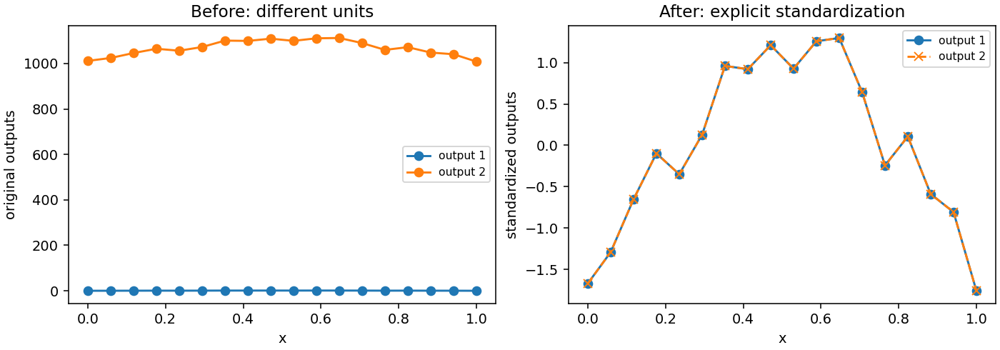

Output scaling
When and why to change output coordinates
A surrogate may predict quantities with very different units, such as latency in seconds and energy in joules. Their numerical ranges can differ by several orders of magnitude. Plotting raw outputs can hide the smaller response, and an error metric that averages squared output errors can be dominated by the larger one. Explicit scaling makes the choice of relative units visible and can make comparisons and optimization gradients easier to interpret.
Core regression does not normalize automatically. fit defines residuals,
ridge and smoothness in the output coordinates you provide. This is intentional:
normalizing a response changes the meaning of zero, and therefore can change
the prior expressed by a penalty. Choose units according to the prediction
problem, retain the transformation, and invert it before reporting physical
errors or sending predictions to downstream software.
Output scaling is separate from parameter coordinates. A simplex input row must still contain nonnegative barycentric values summing to one. Never apply an ordinary feature standardizer independently to those columns and then pass them to a Bézier space: the resulting rows will generally leave the domain. For a product domain, each barycentric factor has its own sum-to-one constraint.
A complete explicit transformation
This example standardizes two responses, fits the transformed observations, and restores predictions. Every tensor is float64 so that comparisons probe the transformation rather than float32 rounding of large offsets.
import torch
from torch_bsf import BezierSpace, Samples, fit
from torch_bsf.preprocessing import StdScaler
x = torch.linspace(0, 1, 21, dtype=torch.float64)
t = torch.stack([1 - x, x], dim=1)
values = torch.stack([x.square(), 1000 + 100 * x.square()], dim=1)
space = BezierSpace.simplex(1, degree=2)
scaler = StdScaler()
transformed = scaler.fit_transform(values)
scaled_result = fit(space, Samples(t, transformed)).require_success()
restored = scaler.inverse_transform(scaled_result.model(t))
direct_result = fit(space, Samples(t, values)).require_success()
assert torch.allclose(restored, direct_result.model(t), atol=1e-10)
The scaler’s statistics are fitted once to training outputs. Apply
transform to later observations with those same statistics; do not refit
them at prediction time. inverse_transform expects the same output-column
order. If column names or units change, update the transformation and model
together rather than silently reusing old statistics.
The model archive stores the learned model in its current coordinates. It
does not package an arbitrary preprocessing object. Save the scaler’s numeric
statistics and column schema through your application, and apply the inverse
transformation when loading the model. A .bsf extension does not imply that
normalization has been inferred or remembered.
Choose a scaler
Scaler |
Transform |
When to try it |
|---|---|---|
|
Subtract column minimum and divide by its training range. |
Known bounded responses; a convenient nominal zero-to-one scale. |
|
Subtract column mean and divide by its training standard deviation. |
Compare variations relative to typical observed spread. |
|
Use lower and upper quantiles as the reference range, without clipping. |
Extreme observations would dominate a min-max scale. |
|
Identity transform and inverse. |
Keep original units within a common preprocessing workflow. |
Min-max scaling maps the training extrema to zero and one, but future observations may fall outside that interval. Standardization does not bound values at all. Quantile scaling is an affine change of units based on robust reference points, not a nonlinear transform to a uniform distribution. Values outside the selected quantile interval remain below zero or above one; they are not clipped or discarded.
QuantileScaler exposes its lower quantile fraction as q (default .05).
Set it before fitting, for example scaler = QuantileScaler(); scaler.q = .1.
Use 0 <= q < .5 so the reference interval is ordered and has a meaningful
width. Increasing q ignores more tail observations when defining the
reference range, usually reducing the divisor and making tails numerically
larger after transformation. It does not reduce their regression weights.
If robust fitting rather than robust scale estimation is required, this
transform alone does not implement it.
Constant output columns use a divisor of one to avoid division by zero.
StdScaler also guards its single-sample standard deviation. Near-constant
columns can still have tiny nonzero ranges: check fitted statistics and decide
whether amplifying their noise is useful. The supplied scalers estimate
unweighted column statistics. Observation weights supplied to Samples do
not automatically change those statistics; calculate an application-specific
weighted transform when that is the intended meaning.
What changes mathematically?
For one output, write the transform as \(z=(y-a)/s\), with nonzero scale \(s\). Bernstein bases contain constants, so transforming each control \(Q=(P-a)/s\) gives the corresponding transformed polynomial. Without penalties or constraints, affine scaling leaves the exact least-squares predictions unchanged after inversion. It can change numerical rounding, but is not a mechanism for making an unregularized independent-column fit more expressive or statistically more accurate.
This observation also applies to multiple independent outputs: rescaling an output multiplies its data objective by a positive constant, without coupling it to other output columns. However, reported aggregate errors and acquisition scores do change their relative weighting across columns. Distinguish the model solution from the statistic used to rank competing models or queries.
With ridge, centering changes the preferred origin. Penalizing \(\|Q\|^2\) favors output \(a\) after inversion, whereas penalizing \(\|P\|^2\) favors original zero. Smoothness uses differences between neighboring controls and is invariant under translation. Pure multiplicative scaling of an independent output scales its data and quadratic penalty terms together, so it need not change its inverse-transformed optimum at unchanged penalty weights. Avoid assuming that every change of units automatically requires a different fitted curve. Check the exact transform, objective and cross-output selection criterion.
Fixed values must be transformed by the same affine rule as observations.
If a known endpoint is 1000 in original units, fixing it to 1000 inside a
standardized fit imposes an entirely different constraint. Transform its
one-row output tensor, then create FixedControls from that transformed
value. Invert predictions before checking agreement with physical boundary
conditions. See Fixed controls for resolving coefficient indices.


Fig. 7 Before: the larger output offset hides the smaller response. After: explicit standardization makes both variations visible. This display change does not claim improved unregularized fitting accuracy: the generator verifies that inverse-transformed and direct predictions agree.
The comparison uses a cubic model and the same noisy observations in both
outputs, with the second output translated and scaled. Reproduce it with
python examples/generate_guide_figures.py; the maximum inverse-prediction
difference is recorded in metrics.json.
Validation without leakage
Fit preprocessing on each training fold, transform that fold’s held-out
outputs with the training statistics, predict, invert, and evaluate in the
units that matter. Fitting the scaler on all outputs before splitting uses
test information. For a regularized fit, that can also change its preferred
origin using held-out data. The convenience cross_validate function does
not fit preprocessing objects for you.
A practical manual fold loop uses KFold.split(len(samples)) and
samples.take(indices). Create a fresh scaler in each iteration. Keep
original held-out values for reporting error, and use the same fold partitions
for every degree and penalty comparison. If you select candidates by
standardized error, explain that each output is weighted relative to its
training spread; if you select by original-unit error, report the units and
output-specific tolerances.
After selection, refit the scaler on all available training data and train a fresh model with the chosen settings. Keep a final untouched test set if one is needed. See Cross-validation and degree search for metrics and Explicit ensembles and active learning for how changing output scales changes committee disagreement rankings.